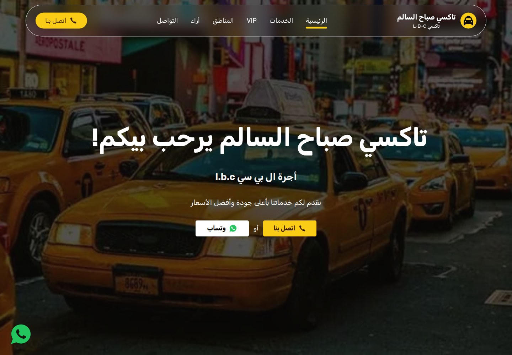
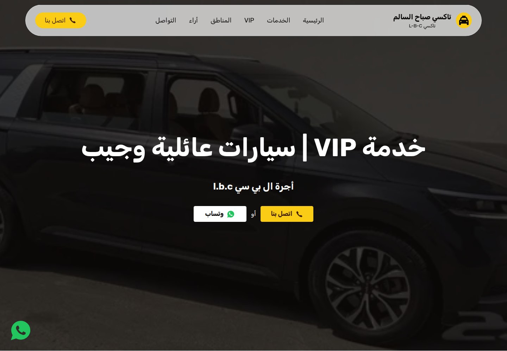
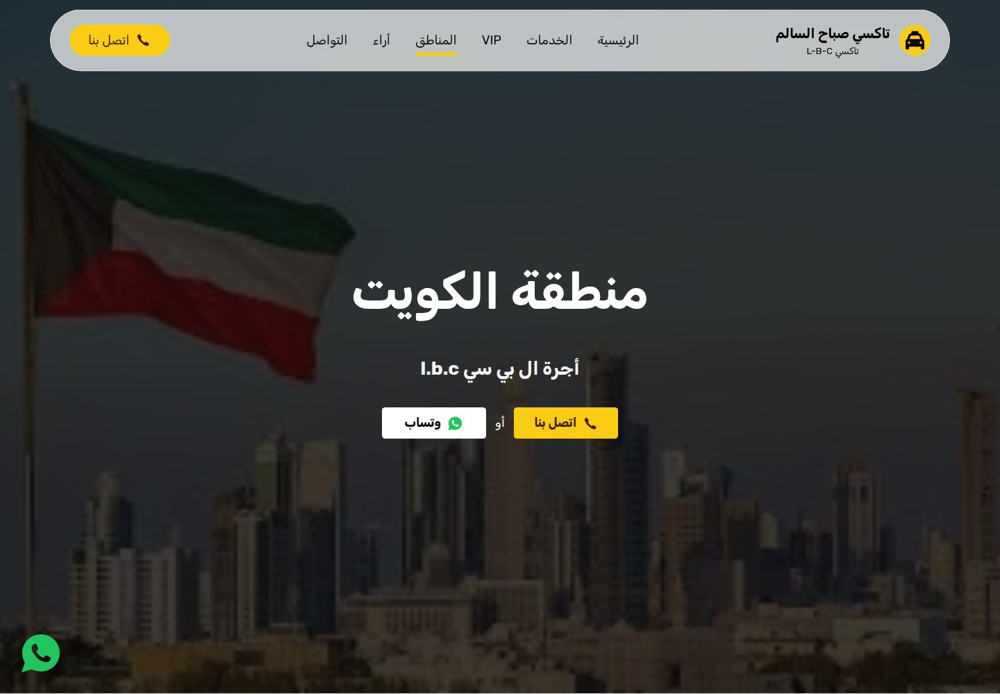
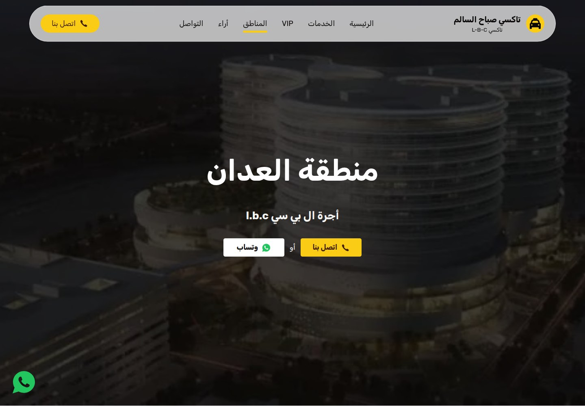
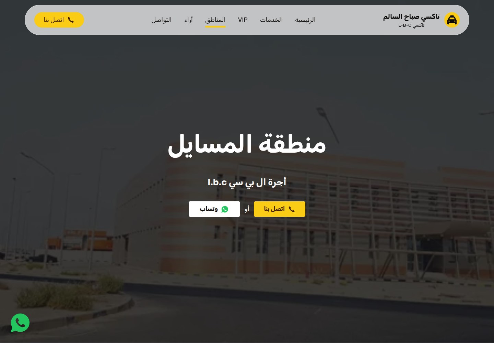
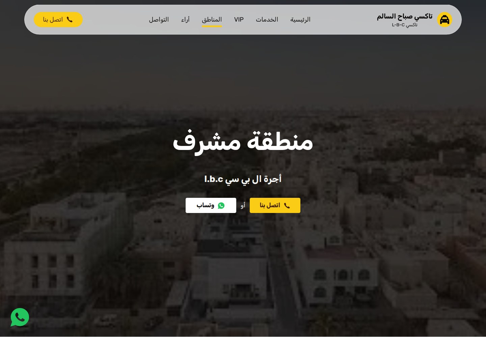
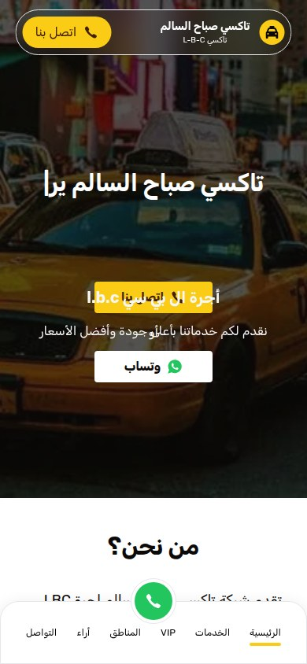
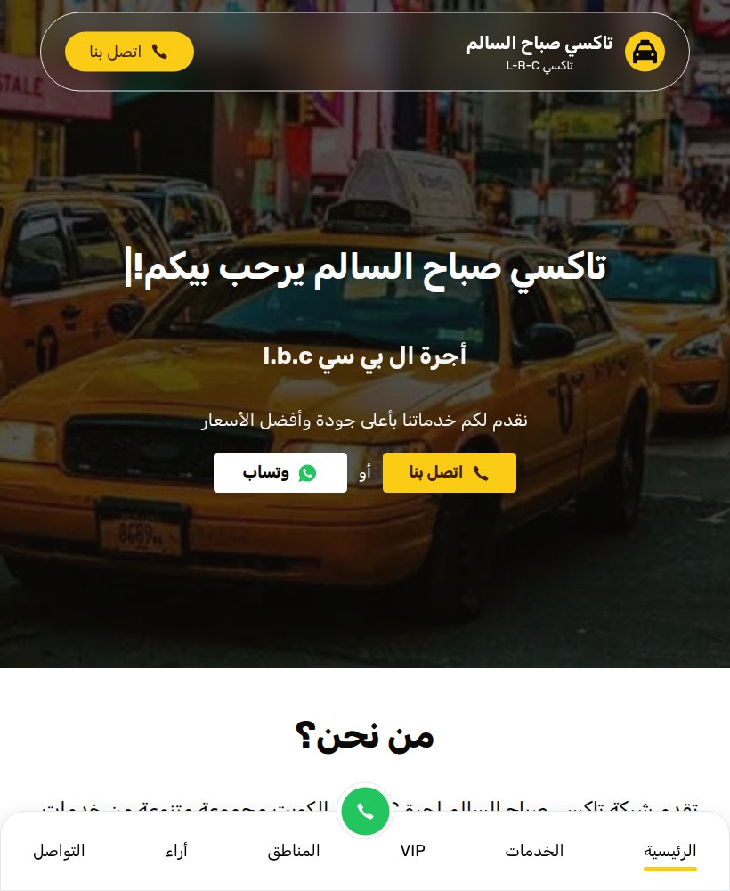
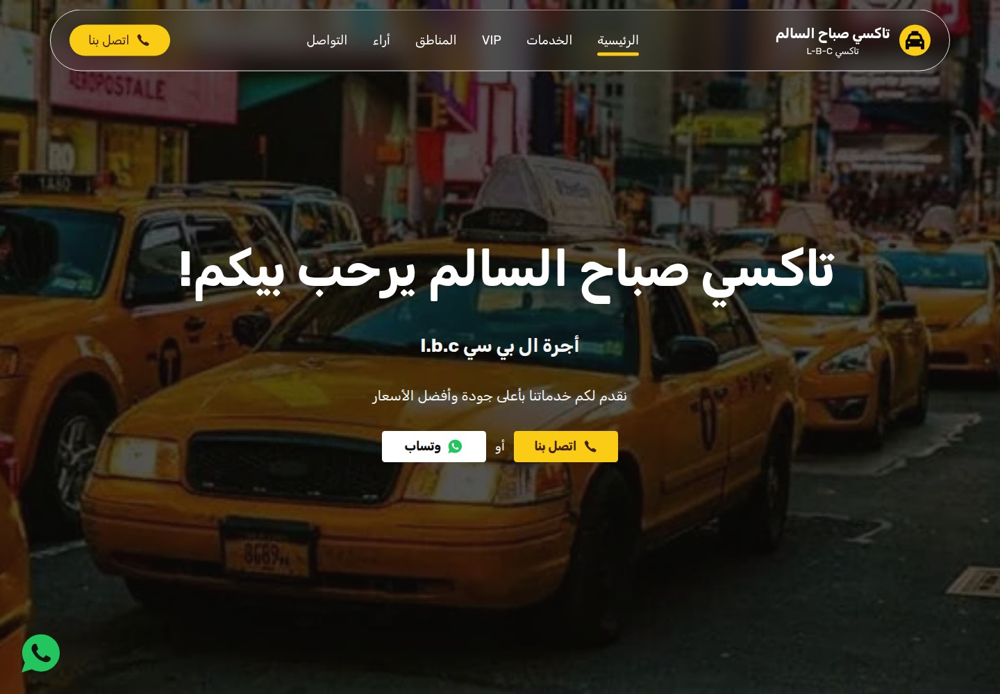
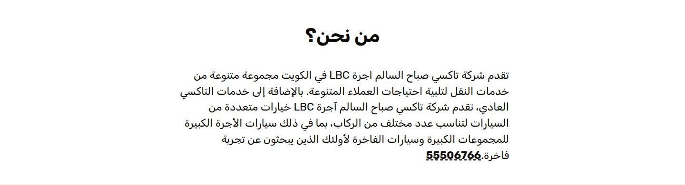

Taxi LBC Kuwait
Taxi rides across Kuwait, from everyday trips to VIP transport.

WHAT IT IS
Taxi and passenger transport in Kuwait, including a separately described VIP family-car/Jeep service.
Promotes local taxi and passenger transport services, describes coverage across Kuwait neighborhoods, and directs prospective riders to call or contact the service on WhatsApp. A contact form is also displayed, but its submission behavior was not tested.
This case study documents what the linked website presents. Individual contribution to this project has not been confirmed.
WHAT THE WEBSITE OFFERS
- Homepage advertises 24-hour service under ‘Arabic text Arabic text Arabic text’ (24-hour service); this is a visible claim, not independently verified availability.
- Homepage lists professional drivers, competitive prices, and comfortable/safe rides as service points; these are marketing claims.
- Homepage describes ordinary taxi service and vehicle choices for different passenger counts, including larger group vehicles and luxury cars.
- VIP page presents family cars and Jeeps, describes the offer as VIP, and lists air-conditioned luxury cars, spacious family vehicles, and Jeeps.
- VIP page copy says the service can be used for private trips and airport transfers; this is page copy, not proof of operational availability.
- Prominent telephone links point to +965 55506766 on the homepage and VIP/area pages.
- WhatsApp booking/contact links are shown on the homepage and VIP/area pages, with prefilled Arabic message text.
- Homepage provides image-backed coverage links for 16 named areas; the /taxi-kuwait page was opened and contains its own area-specific content plus links to other areas.
VISITOR JOURNEY
Tap ‘Arabic text Arabic text’ or the displayed number to open the device’s telephone handler for +96555506766.
AUTHENTIC SCREEN CAPTURES · 11
Inside the experience.
Genuine, distinct screen captures supplied for this project. No screenshots have been fabricated or duplicated.








